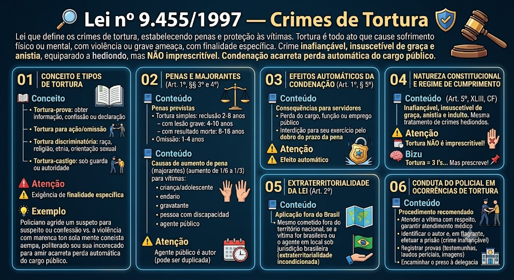

Crimes de Tortura — Lei 9.455/1997
BR / 2026-10-13 / compilada (texto vigente)
Consultar fonte oficial Baixar cópia local
A redação desta cópia corresponde à versão identificada acima. Consulte a fonte oficial para conferir alterações posteriores e o recorte do seu edital.
Roteiro de leitura
- Condutas e sujeitos
- Hipóteses, efeitos e garantias
- Aplicação da lei
Índice dos 4 dispositivos
Lei nº 9.455 de 07/04/1997
LEI Nº 9.455, DE 7 DE ABRIL DE 1997
Define os crimes de tortura e dá outras providências.
O PRESIDENTE DA REPÚBLICA
Faço saber que o Congresso Nacional decreta e eu sanciono a seguinte Lei:
Art. 1º Constitui crime de tortura:
I - constranger alguém com emprego de violência ou grave ameaça, causando-lhe sofrimento físico ou mental:
a) com o fim de obter informação, declaração ou confissão da vítima ou de terceira pessoa;
b) para provocar ação ou omissão de natureza criminosa;
c) em razão de discriminação racial ou religiosa;
II - submeter alguém, sob sua guarda, poder ou autoridade, com emprego de violência ou grave ameaça, a intenso sofrimento físico ou mental, como forma de aplicar castigo pessoal ou medida de caráter preventivo.
III - submeter mulher, reiteradamente, a intenso sofrimento físico ou mental, no contexto de violência doméstica e familiar, sem prejuízo da aplicação das penas correspondentes a outras infrações penais. *(Inciso acrescido pela Lei nº 15.410, de 20/5/2026)*
Pena - reclusão, de dois a oito anos.
§ 1º Na mesma pena incorre quem submete pessoa presa ou sujeita a medida de segurança a sofrimento físico ou mental, por intermédio da prática de ato não previsto em lei ou não resultante de medida legal.
§ 2º Aquele que se omite em face dessas condutas, quando tinha o dever de evitá-las ou apurá-las, incorre na pena de detenção de um a quatro anos.
§ 3º Se resulta lesão corporal de natureza grave ou gravíssima, a pena é de reclusão de quatro a dez anos; se resulta morte, a reclusão é de oito a dezesseis anos.
§ 4º Aumenta-se a pena de um sexto até um terço:
I - se o crime é cometido por agente público;
II - se o crime é cometido contra criança, gestante, portador de deficiência, adolescente ou maior de 60 (sessenta) anos; *(Inciso com redação dada pela Lei nº 10.741, de 1º/10/2003, publicada no DOU de 3/10/2003, em vigor 90 dias após a publicação).*
III - se o crime é cometido mediante seqüestro.
§ 5º A condenação acarretará a perda do cargo, função ou emprego público e a interdição para seu exercício pelo dobro do prazo da pena aplicada.
§ 6º O crime de tortura é inafiançável e insuscetível de graça ou anistia.
§ 7º O condenado por crime previsto nesta Lei, salvo a hipótese do § 2º, iniciará o cumprimento da pena em regime fechado.
Art. 2º O disposto nesta Lei aplica-se ainda quando o crime não tenha sido cometido em território nacional, sendo a vítima brasileira ou encontrando-se o agente em local sob jurisdição brasileira.
Art. 3º. Esta Lei entra em vigor na data de sua publicação.
Art. 4º Revoga-se o art. 233 da Lei nº 8.069, de 13 de julho de 1990 - Estatuto da Criança e do Adolescente.
Brasília, 7 de abril de 1997; 176º da Independência e 109º da República.
FERNANDO HENRIQUE CARDOSO
Nelson A. Jobim
Material de estudo: Lei nº 9.455/1997 — Crimes de Tortura
Material complementar · Ver fonte no GitHub
Conceito e Tipos de Tortura
Definição legal (Art. 1º)
Tortura é todo ato praticado por agente público ou particular, com violência ou grave ameaça, que cause sofrimento físico ou mental, com uma das seguintes finalidades específicas:
1. Tortura-prova: obter informação, confissão ou declaração.
2. Tortura para ação/omissão: obrigar alguém a fazer ou deixar de fazer algo.
3. Tortura discriminatória: motivada por raça, religião, etnia, orientação sexual, etc.
4. Tortura-castigo: submeter alguém sob guarda ou autoridade a sofrimento como castigo.
⚠️ Exigência de finalidade específica
A conduta só se configura tortura se houver uma finalidade específica (obter confissão, castigar, discriminar, etc.). Se faltar essa finalidade, o fato pode configurar lesão corporal, maus-tratos ou constrangimento ilegal, mas não tortura. Essa é uma pegadinha clássica em provas.
Situação prática
Um policial agride um suspeito para forçá-lo a confessar um crime. Isso configura tortura (tortura-prova). Se o policial agride o suspeito por mera violência, sem objetivo de obter informação ou castigar, pode ser lesão corporal, não tortura.
Penas e Majorantes (Art. 1º, §§ 3º e 4º)
Penas previstas
A lei estabelece as seguintes penas para o crime de tortura:
- Tortura simples: reclusão de 2 a 8 anos.
- Tortura com lesão grave: reclusão de 4 a 10 anos.
- Tortura com resultado morte: reclusão de 8 a 16 anos.
- Omissão (agente público que deixa de evitar a tortura): reclusão de 1 a 4 anos.
Causas de aumento de pena (majorantes)
A pena é aumentada de 1/6 (um sexto) a 1/3 (um terço) se a vítima for:
- Criança ou adolescente (menor de 18 anos).
- Idoso (maior de 60 anos).
- Gestante.
- Pessoa com deficiência.
- Agente público no exercício da função.
Agente público como autor
Se o agente for agente público (policial, servidor, etc.) e cometer tortura, a pena pode ser duplicada (aumento em dobro) — previsão no § 4º do art. 1º.
Efeitos Automáticos da Condenação (Art. 1º, § 5º)
Consequências para servidores públicos
A condenação por crime de tortura, quando o agente for funcionário público, acarreta automaticamente:
- Perda do cargo, função ou emprego público.
- Interdição para seu exercício pelo dobro do prazo da pena aplicada.
⚠️ Efeito automático
Diferentemente de outras leis em que a perda do cargo pode ser facultativa ou condicionada, na Lei de Tortura a perda do cargo é efeito automático da condenação (embora exija motivação na sentença). Isso é muito cobrado em provas.
Natureza Constitucional e Regime de Cumprimento
Previsão constitucional (Art. 5º, XLIII, CF)
A Constituição Federal considera a tortura crime inafiançável e insuscetível de graça, anistia e indulto. A lei recebe o mesmo tratamento dos crimes hediondos, embora esteja em lei própria (Lei 9.455/1997).
⚠️ Tortura NÃO é imprescritível!
Cuidado: a tortura prescreve normalmente, conforme as regras do Código Penal (art. 109). O que é imprescritível na CF são apenas o racismo e a ação de grupos armados contra a ordem constitucional. Bancas adoram afirmar que tortura é imprescritível — marque ERRADO!
Dica de prova
📌 Tortura = 3 I's: Inafiançável, Insuscetível de graça/anistia/indulto, e equiparada a hediondo. Mas prescreve!
Extraterritorialidade da Lei (Art. 2º)
Aplicação fora do Brasil
A lei brasileira aplica-se ao crime de tortura mesmo que cometido fora do território nacional, desde que a vítima seja brasileira ou que o agente se encontre em local sob jurisdição brasileira (extraterritorialidade incondicionada). Esse é um ponto cobrado em provas de carreiras jurídicas e policiais.
Conduta do Policial em Ocorrências de Tortura
Procedimento recomendado
Em ocorrência envolvendo tortura, o policial deve:
- Atender a vítima com respeito, garantir atendimento médico se houver lesões.
- Identificar o autor e, em flagrante, efetuar a prisão (crime inafiançável).
- Registrar provas (testemunhas, laudos periciais, imagens, etc.).
- Encaminhar o preso à delegacia para lavratura do auto de prisão em flagrante.
Mapa-mental
Mapa-mental
